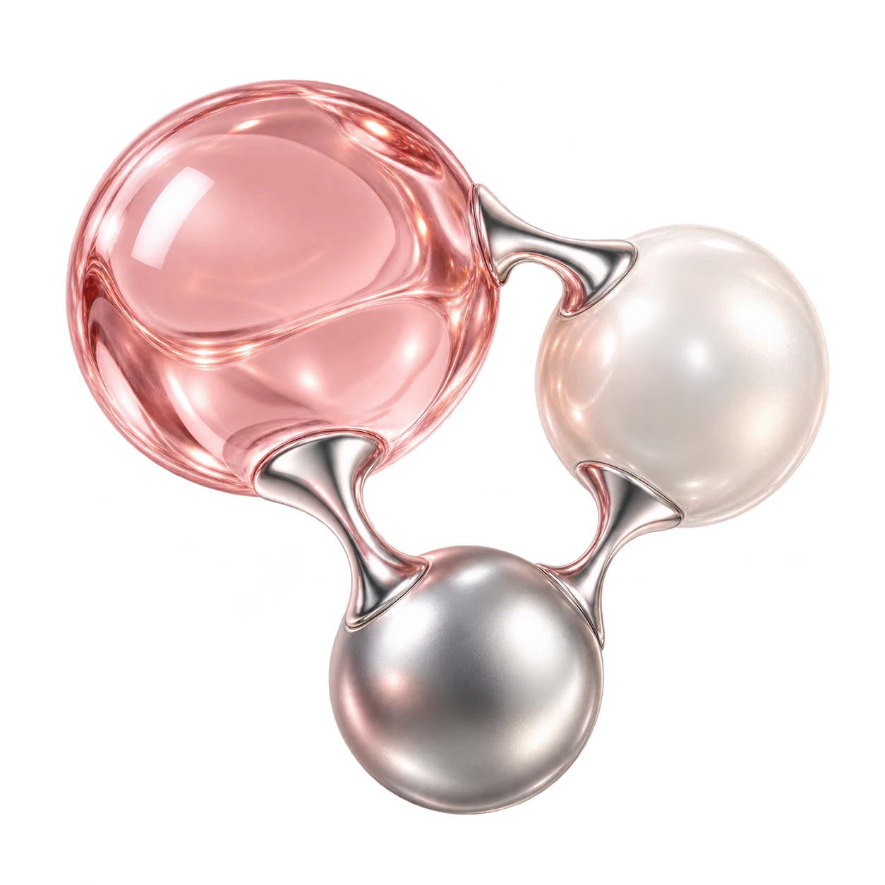
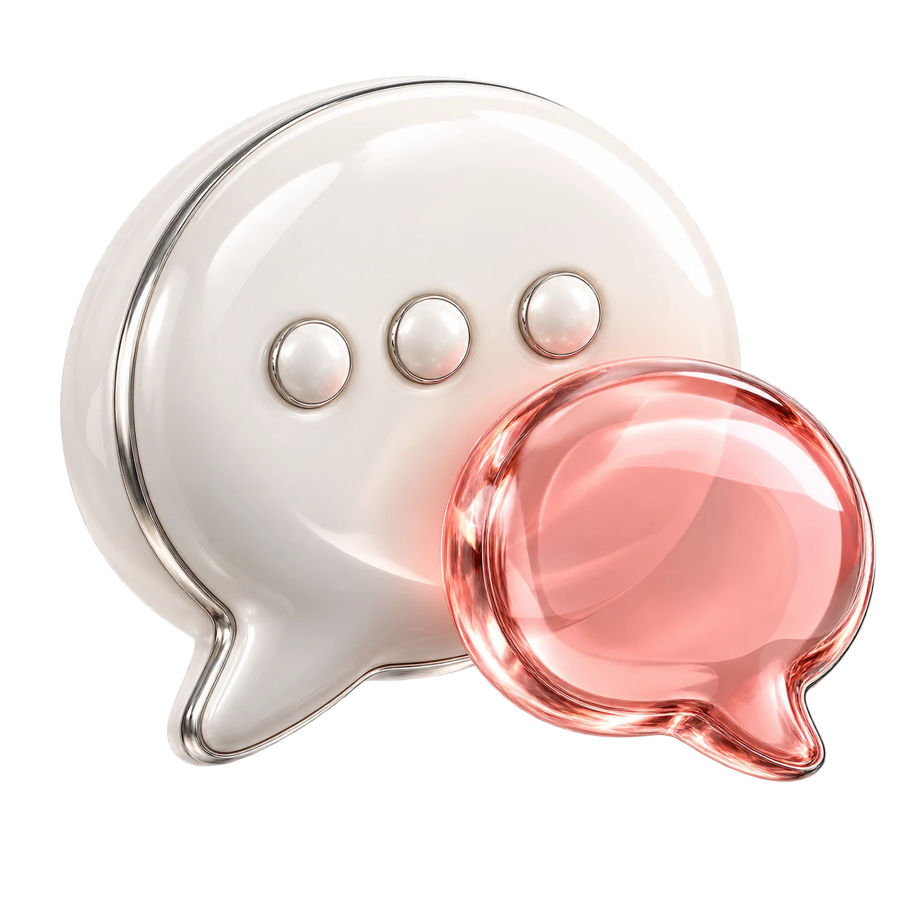
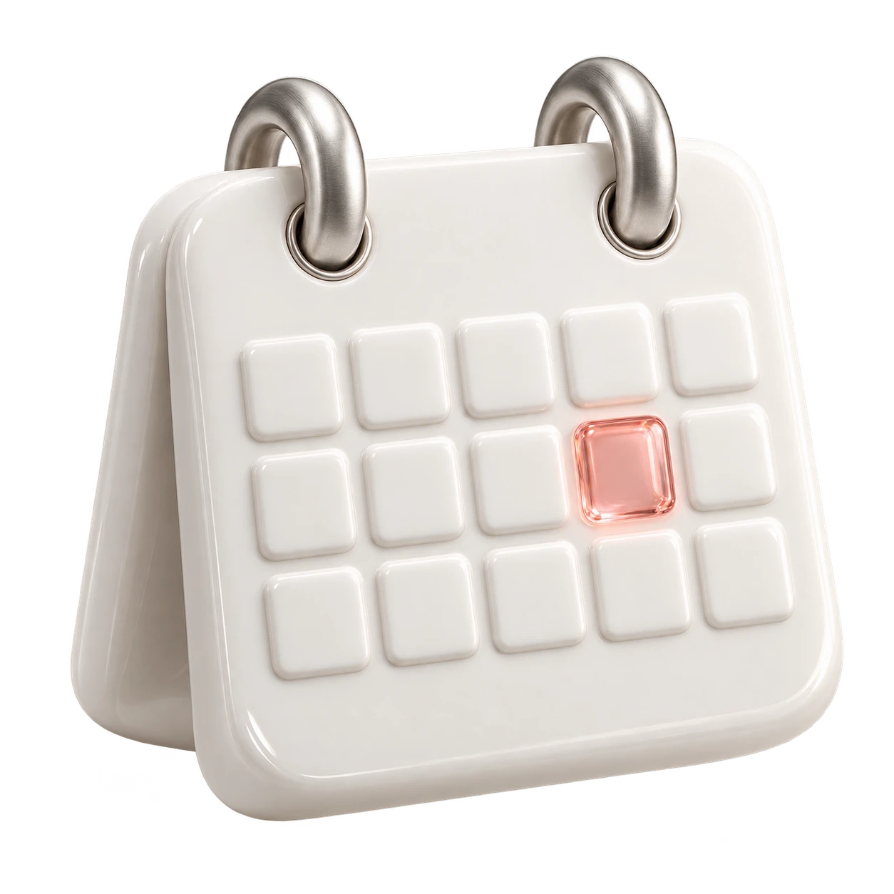

01
성분부터 확인
투여할 성분과 제품,
용도에 대한 설명을 듣습니다.
Your care.Your pace.
성분과 내 몸의 상태를 살피고,
상담을 통해 케어를 계획합니다.
01 / GLUTATHIONE
Care,from within.
백옥주사는 글루타치온 성분을 사용하는
주사요법을 부르는 이름입니다.
글루타치온은 우리 몸에도 존재하며
산화·환원 과정에 관여합니다.
어떤 구성으로, 어떤 목적으로 진행할지는
개인의 건강 상태를 살핀 뒤 결정합니다.

02 / KNOW YOUR CARE
이름만으로 선택하기보다
성분, 건강 상태, 진료 계획을
하나씩 확인해 보세요.
투여할 성분과 제품,
용도에 대한 설명을 듣습니다.

02복용약과 알레르기,
기저질환을 함께 살펴봅니다.

03진행 여부와 구성은
의료진과 상담해 결정합니다.
피부 미백을 위한 정맥 글루타치온의 효과와 장기 안전성에 관한 임상 근거는 충분하지 않습니다. 특정 피부색 변화나 효과를 보장하는 시술로 이해하기보다, 기대할 수 있는 점과 한계를 상담에서 확인해 주세요.

04 / STEP BY STEP
상담·준비·투여·상태 확인.
소요시간과 구성은
예약 시 함께 확인해 주세요.
현재 건강 상태와 이전 주사 이력, 원하는 상담 내용을 확인합니다.
투여할 성분과 진행 방법, 예상 가능한 이상반응을 설명받습니다.
의료진의 판단에 따라 진행하며, 불편감이 생기면 바로 알립니다.
주사 부위와 몸의 상태를 확인하고 귀가 후 주의사항을 안내받습니다.
01 / 03
복용 중인 약과 건강기능식품, 약물 알레르기, 기저질환, 임신·수유 여부를 의료진에게 알려주세요. 이전에 주사 후 불편했던 경험도 함께 이야기해 주세요.
02 / 03
주사 부위의 통증·부기, 메스꺼움이나 어지럼 등 몸의 변화가 느껴지면 즉시 의료진에게 알려주세요. 호흡곤란이나 전신 두드러기가 나타나면 신속한 처치가 필요합니다.
03 / 03
주사 부위를 세게 문지르지 말고 안내받은 관리 방법을 따라주세요. 이상 증상이 지속되거나 심해지면 병원에 연락하고, 호흡곤란이나 심한 어지럼 등은 즉시 응급 진료를 받으세요.
A little care.
개인의 건강 상태에 따라
진행이 어려울 수 있습니다.
의료진의 안내를 우선해 주세요.
약물 알레르기, 기저질환과 복용약, 임신·수유 여부를 알리고 시술이 적합한지 먼저 확인합니다.
주사 부위 통증·멍·부기나 발진, 메스꺼움 등이 나타날 수 있습니다. 상태가 지속되거나 심해지면 병원에 문의해 주세요.
드물게 심한 과민반응이 나타날 수 있습니다. 호흡곤란, 전신 두드러기, 심한 어지럼이 생기면 즉시 의료진에게 알리고 응급 진료를 받으세요.
글루타치온 성분을 사용하는 주사요법을 흔히 백옥주사라고 부릅니다. 제품과 투여 방법은 진료 후 확인해야 하며, 모든 분께 같은 구성을 적용하지 않습니다.
우리 몸에도 존재하며 산화·환원 과정에 관여하는 성분입니다. 성분의 생리적 역할과 주사 시술로 기대할 수 있는 변화는 구분해서 이해해야 합니다.
피부 미백을 위한 정맥 글루타치온의 효과와 장기 안전성에 관한 임상 근거는 충분하지 않습니다. 특정 피부색 변화나 유지기간을 보장할 수 없으며, 피부 고민의 원인에 맞는 진료가 먼저입니다.
대표 성분이 다릅니다. 백옥주사는 글루타치온, 신데렐라주사는 알파리포산을 중심으로 안내되는 이름입니다. 두 이름을 같은 성분이나 동일한 시술로 생각하지 말고 실제 투여 구성을 확인해 주세요.
상담·준비·투여·상태 확인에 필요한 시간은 구성과 개인 상태에 따라 달라집니다. 횟수와 간격을 일률적으로 정하기보다 진료에서 필요성을 확인하고 예약 시 전체 방문 시간을 안내받아 주세요.
현재 복용 중인 약과 건강기능식품, 약물 알레르기, 이전 주사 후 이상반응, 기저질환, 임신·수유 여부를 의료진에게 알려주세요. 현재 건강 상태에 따라 시술이 적합하지 않을 수 있습니다.
주사 부위 통증·멍·부기나 발진, 메스꺼움 등이 나타날 수 있습니다. 드물게 심한 과민반응이 생길 수 있으므로 호흡곤란, 전신 두드러기, 심한 어지럼이 생기면 즉시 의료진에게 알리고 응급 진료를 받으세요.
병행 여부는 다른 약제의 성분과 투여 이력, 현재 건강 상태를 확인한 뒤 결정합니다. 이름이 비슷한 수액이라도 같은 구성은 아니므로 의료진에게 최근 시술과 투약 내용을 알려주세요.
서울 마포구 양화로 66, 메디원메디컬센터 6층·8층에 위치합니다. 접수는 6층이며, 합정역 3번 출구 인근입니다. 아래에서 위치와 진료시간을 확인하고 상담을 예약할 수 있습니다.
나를 위한 선택,
충분한 상담에서 시작하세요.
나에게 맞는 이벤트를 펼쳐보세요.
Beauty, with care.
피부 상태와 원하는 변화를 세심하게 살피고,
정품·정량과 충분한 설명을 진료의 기본으로 생각합니다.

피부 상태와 일상, 원하는 변화를
함께 살펴 나에게 맞는 진료 계획을 세웁니다.

정품 사용과 정량 원칙을
진료의 기본으로 생각합니다.

개개인의 자연스러운 아름다움을 존중하며,
시술 과정과 관리 방법을 충분히 설명합니다.
Find us.
평일 10:00–20:00
주말·대체공휴일 10:00–16:30
점심시간 없이 진료 · 공휴일 진료는 문의
평일 10:00–20:00
주말·대체공휴일 10:00–16:30
점심시간 없이 진료 · 공휴일 진료는 문의